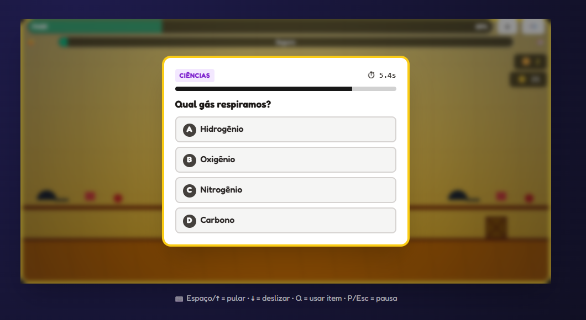
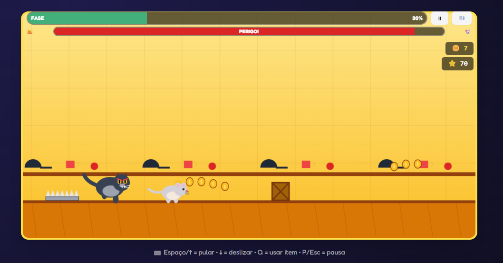

Tela inicial

Aprenda, desvie dos gatos e avance fase por fase.
StudyingRAT é um jogo educacional desenvolvido para unir entretenimento e aprendizado. Nele, o jogador assume o papel de um rato estudante que atravessa fases com obstáculos, desafios e predadores, como gatos. Ao longo da jornada, é preciso resolver atividades educativas para avançar até o final de cada fase.
Gênero: aventura, plataforma e quiz educacional.
Mecânicas: correr, desviar, coletar itens e responder desafios.
História: um rato estudante busca conhecimento enquanto escapa dos perigos.
Objetivo: chegar ao fim das fases acumulando pontos e aprendizado.
Tela inicial

Desafio educativo

Obstáculos e pontuação
Use teclado, mouse ou toque na tela para correr, pular e desviar dos obstáculos.
Evite encostar nos predadores para não perder vida durante a fase.
Resolva perguntas educativas para liberar caminhos e ganhar pontos.
Chegue ao final com a maior pontuação possível e avance para novos níveis.
| Característica | Mínimo | Recomendado |
|---|---|---|
| Dispositivo | Celular, tablet, notebook ou computador | Dispositivo com navegador atualizado |
| Sistema operacional | Android, iOS, Windows, macOS, Linux ou ChromeOS | Sistema atualizado na versão mais recente disponível |
| Navegador | Chrome, Firefox, Edge, Safari ou equivalente | Navegador moderno atualizado com suporte a HTML5 |
| Tela | Interface adaptável para telas pequenas e grandes | Boa resolução para melhor leitura e jogabilidade |
| Controles | Toque, mouse ou teclado | Toque, mouse e teclado disponíveis |
| Conexão | Acesso à internet | Conexão estável para melhor desempenho |
Documentação técnica
Suporte à documentação técnica
Suporte geral
Web designer
Desenvolvedor sênior
Allex Gustav, criador e artista do banner do StudyingRAT, além de seu enorme apoio emocional aos integrantes.
O StudyingRAT é um jogo web. Para jogar, basta abrir o link oficial em um navegador moderno, seja no celular, tablet, notebook ou computador. As versões para Play Store e App Store podem ser consideradas futuramente.
O jogador deve utilizar o StudyingRAT apenas para fins educativos e de entretenimento. Não é permitido modificar, vender ou distribuir versões alteradas do jogo sem autorização da equipe.
A versão web do jogo não coleta dados pessoais sensíveis. Caso exista registro de nome, apelido ou pontuação, essas informações serão usadas apenas para progresso e identificação dentro do jogo.
Em conformidade com a Lei 13.709/2018, o usuário pode enviar dúvidas e solicitar correções ou exclusão de dados pelo contato da equipe.